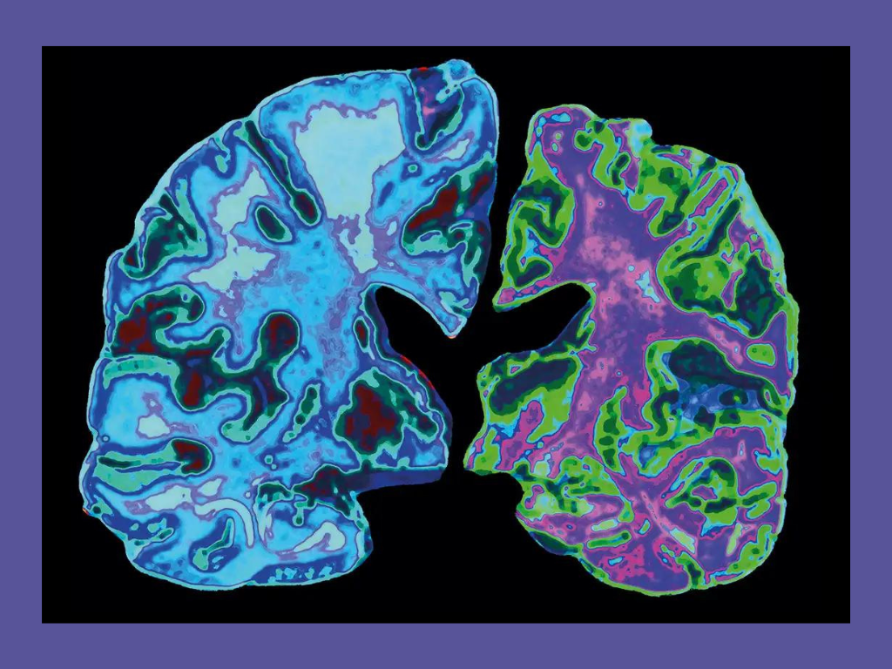

Alzheimer’s causes amyloid plaques and neurofibrillary tangles in a patient’s brain. These plaques consist of deteriorating neurons and cells along with clumps of a type of protein called beta-amyloid. A specific form, beta-amyloid 42, is thought to be toxic and is unusually prevalent in the brain of an Alzheimer’s patient. The neurofibrillary tangles are twisted filaments located in neurons made up of tau, which is also another type of protein. Normally, the tau works in healthy neurons to help the microtubules transfer substances to the nerve cell. But with Alzheimer’s disease, tau is altered to twist and fold into paired helical filaments, which causes the tangles. This impairs the microtubules, forcing the neuron transport system to break down. Both the plaques and tangles intensify as the disease grows, leading cells to die and display the effects of Alzheimer’s.
Alzheimer’s disease can be described as brain cell death. This condition slowly worsens and degenerates the patient’s cognitive abilities over a rough span of seven to ten years. As time passes, noticeable declines in memory, movement, behavior, and language are experienced. Patients will have difficulty performing everyday tasks and also become easily disoriented. Changes in personality are also possible, like having a short temper and developing hostility. Once in the later stages of Alzheimer’s, motor functions are eventually damaged. People will lose the ability to swallow and have weak bladder control. Normally, overarching symptoms like depression, delusions, and sleeplessness are adopted.